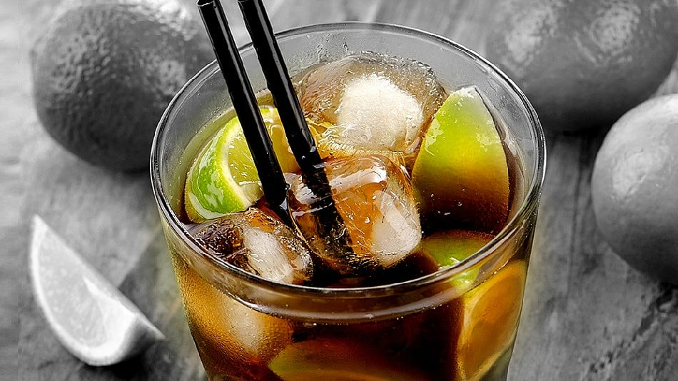

Las bebidas y su historia

Frase del día: "El trabajo nos da días prósperos,el vino nos da domingos felices. (Charles Baudelaire)"
Bienvenidos a nuestra sección especial, donde viajaremos en el tiempo para descubrir los orígenes y las fascinantes historias que se esconden detrás de nuestros tragos favoritos. Prepárense para un emocionante recorrido por los siglos, explorando cómo las bebidas alcohólicas han influido en la cultura, la sociedad y los momentos más emblemáticos de la humanidad.
Frase del día: "El trabajo nos da días prósperos,el vino nos da domingos felices. (Charles Baudelaire)"